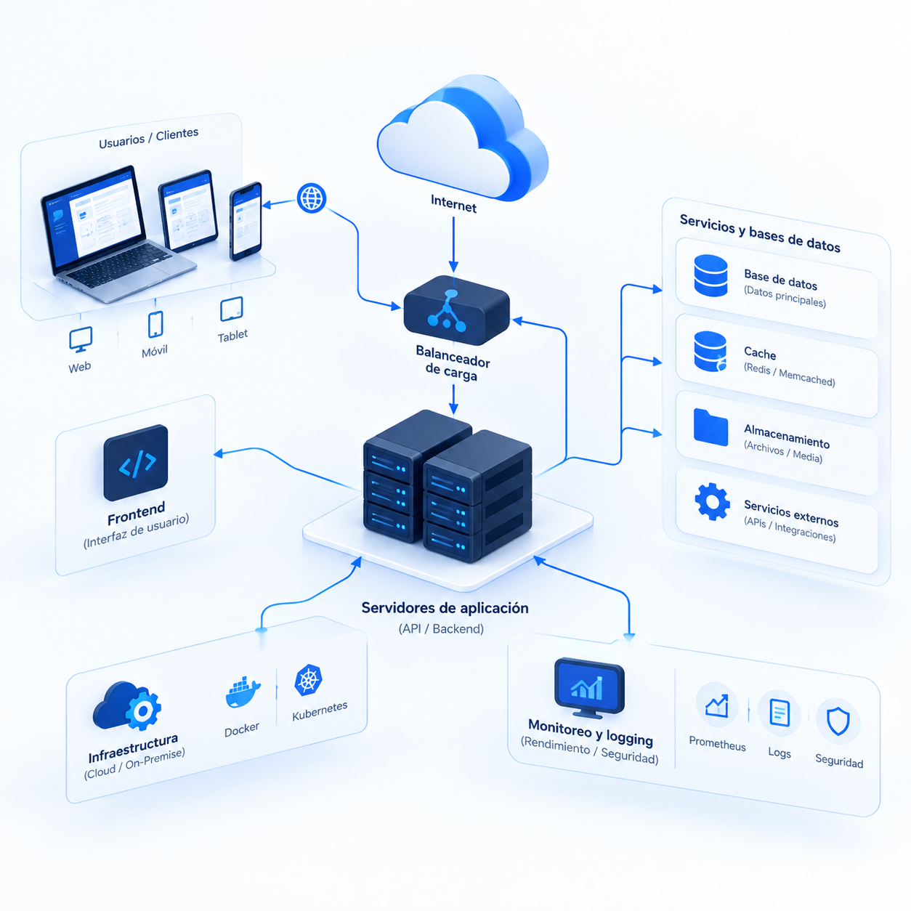

01
BACKEND
Servicios y lógica
Python FastAPI Django Flask Node.jsREST APIsJWTWebSockets
Mi trabajo combina software, electrónica, hardware, automatización y análisis para construir soluciones tecnológicas completas.

Desarrollo sistemas digitales organizados por función, desde la lógica del backend hasta las interfaces, los datos y la infraestructura.
Diseño automatizaciones para reducir tareas repetitivas, mejorar procesos y conectar diferentes sistemas.
Entiendo el hardware suficiente para diseñar sistemas donde el software y el mundo físico trabajan juntos.
Captura de variables y eventos del entorno.
Control y procesamiento en sistemas físicos.
Integración de componentes y circuitos.
Intercambio de información entre dispositivos.
Conexión entre componentes físicos y software.
Construcción y validación de conceptos tecnológicos.
Dispositivos conectados e intercambio de datos.
El enfoque está en la integración completa: capturar información, procesarla, almacenarla y convertirla en una herramienta útil para el usuario.
Diseño componentes, mecanismos y prototipos destinados a integrarse en sistemas tecnológicos.
Llevar una solución desde la idea inicial hasta su implementación requiere análisis, planificación, coordinación, documentación y validación.
Comprensión del problema y definición del alcance.
Identificación y estructuración de necesidades.
Organización de actividades, recursos y entregables.
Seguimiento de actividades y componentes.
Registro técnico para facilitar continuidad y control.
Verificación del funcionamiento y cumplimiento.
Control de avances, resultados y próximos pasos.
El objetivo es conectar las diferentes disciplinas para construir sistemas coherentes, funcionales y orientados a una necesidad concreta.